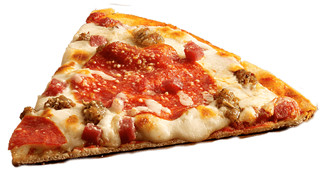
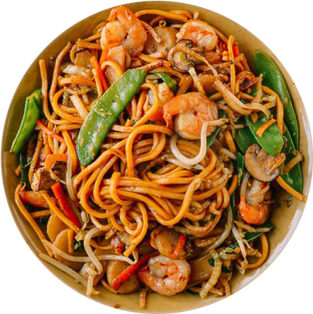
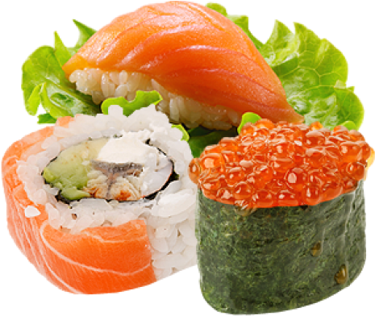

FOOD GALLARY

Burger
A hamburger, or simply burger, is a food consisting of fillings—usually a patty of ground meat, typically beef—placed inside a sliced bun or bread roll.

Pizza
Pizza is a dish of Italian origin consisting of a usually round, flat base of leavened wheat-based dough topped with tomatoes, cheese, and often various other ingredients, which is then baked at a high temperature, traditionally in a wood-fired oven.

Noodle
Noodles are a type of food made from unleavened dough which is either rolled flat and cut, stretched, or extruded, into long strips or strings

Tacos
A taco is a traditional Mexican food consisting of a small hand-sized corn- or wheat-based tortilla topped with a filling. The tortilla is then folded around the filling and eaten by hand.

Sushi
A spicy tuna roll is a makizushi roll that usually contains raw tuna, and spicy mayo or sriracha. The roll is often seasoned with Ichimi togarashi.
Read More